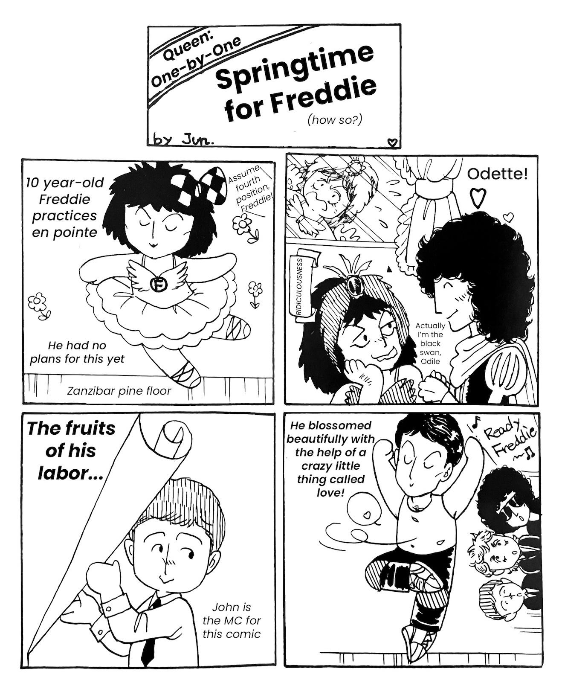

Vol. 26 — August 1983
1982 was a relatively quiet year for Queen, so there isn't much to report on, and most content contained in vol. 26 was cross-sourced from the English fanclub anyways. It's explained that a Japanese contact living in London established ties with the UK fanclub. There were only three official Queen fanclubs worldwide: the Japanese fanclub, the Dutch fanclub, and the original English fanclub based out of the UK, which is still going today.There is a news item regarding the first VHS release of Live in Japan. The other news items are mostly regarding personal lives and side projects of the band members, plus an item on the movie The Hotel New Hampshire, which Queen was originally slated to provide the soundtrack for. Ultimately this didn't pan out, but Freddie did write Keep Passing the Open Windows for this film, and the song made its way to their next album The Works. There is also a chance to send away for Gluttons for Punishment, a book chronicling the band's 1981 South American tour. When this relatively rare book goes up on auction sites today, it usually fetches at least $100 USD.
The footage from the April 25th, 1979 Budoukan performance was finally broadcast over several dates in July of 1982, and multiple fans in the want ads are looking for Betamax and VHS copies to dub from. VHS copies of the August 19th, 1981 NHK broadcast footage are also being sought here.
Someone is selling the instrumental LP Queen Songs featuring Akiko Yano on keyboards. It's a bit muzaky, but I believe it's worth checking out, especially because several of the song choices are deeper cuts that might not be what you'd expect to find on an album of Queen covers.
